Anteriormente comentamos que habían otras formas de simplificar una función aparte de la simplificación algebraica. Otra manera de simplificar funciones es representándolas en lo que se conoce como mapas de Karnaugh. Éste constituye un método sencillo y apropiado para la minimización de funciones lógicas. El tamaño del mapa depende del número de variables, y el método de minimización es efectivo para expresiones de hasta 6 variables. Por supuesto que siempre podrán resolverse las simplificaciones por teoremas. Sin embargo, mucha gente considera que resulta más fácil visualizar las simplificaciones si se presentan gráficamente. Como ya se dijo, los mapas de Karnaugh pueden aplicarse a dos, tres, cuatro, cinco y seis variables ya que para más variables, la simplificación resulta tan complicada que conviene en ese caso utilizar teoremas mejor. Entonces, el mapa de Karnaugh es un método gráfico que se utiliza para simplificar una función lógica y así facilitar el diseño del correspondiente circuito lógico, todo en un proceso simple y ordenado.
Obtener la función de un Mapa de Karnaugh es el procedimiento inverso a la de la realización del mapa. Un término de la función coloca uno o mas "unos" en el mapa de Karnaugh. Tomar esos unos, agrupándolos de la forma adecuada, nos permite obtener los términos de la función. Utilizaremos los Mapas de Karnaugh para obtener una función mínima. Una expresión es mínima si no existe otra expresión equivalente que incluya menos términos y no hay otra expresión equivalente que conste con el mismo número de términos, pero con un menor número de literales. Pueden existir varias expresiones distintas, pero equivalentes, que satisfagan esta definición y tengan el mismo número de términos y literales.
La minimización de funciones sobre el mapa de Karnaugh se aprovecha del hecho de que las casillas del mapa están arregladas de tal forma que entre una casilla y otra, en forma horizontal o vertical existe ADYACENCIA LOGICA. Esto quiere decir que entre una casilla y otra sólo cambia una variable.
Definimos los “términos mínimos adyacentes” desde el punto de vista lógico como dos términos mínimos que difieren sólo en una variable. Agrupando casillas adyacentes obtenemos términos que eliminan las variables que se complementan, resultando ésto en una versión simplificada de la expresión.
El procedimiento es el de agrupar "unos" adyacentes en el mapa. Cada grupo corresponderá a un término producto, y la expresión final dará un OR (suma) de todos los términos producto. Se busca obtener el menor número de términos productos posible.
Veamos ahora algunos ejemplos ya que creo que la mejor forma de entender este concepto es con ellos.
1.-
Simplificar la función de dos variables F=A'B+AB'+AB
Lo
primero que hay que hacer es representarlo en un mapa de dos
variables. La forma de hacerlo es similar a una tabla. Veamos como
sería la tabla de la verdad:
|
A |
B |
F |
|
0 |
0 |
0 |
|
0 |
1 |
1 |
|
1 |
0 |
1 |
|
1 |
1 |
1 |
Para un mapa de dos variables, el concepto sería algo como:
|
A \ B |
0 |
1 |
|
0 |
m0 |
m1 |
|
1 |
m2 |
m3 |
OJO: Puse el signo “\” por comodidad pero en realidad es una línea completa desde la esquina superior izquierda hasta la inferior derecha que divide esa celda en dos triángulos iguales. Las variables con las que se está trabajando se colocan en cada una de esas divisiones. En este caso quiero hacer ver que la A es la columna y la B es la fila. De ahora en adelante lo mostraremos siempre así pero en realidad debería verse así:
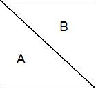
|
A \ B |
0 |
1 |
|
0 |
0 |
1 |
|
1 |
1 |
1 |
O incluso podrían hacer algo como:
|
|
B' |
B |
|
A' |
0 |
1 |
|
A |
1 |
1 |
O
sea, que para llenar la tabla, pongo un uno en todos los términos
mínimos que contenga la función (que para la función
F=A'B+AB'+AB son m1, m2 y m3
respectivamente) o sencillamente donde la tabla de la verdad me
indique [que son los grupos (A,B) = (0,1), (1,0) y (1,1)]. Dicho
ésto, creo que ya pueden visualizar bien la forma en la que se
hace el mapa. Continuemos.
Una vez hecho el mapa, debemos
marcar las regiones contiguas que manejen 1's. En el siguiente dibujo
vemos cómo se marcan dos regiones. Estas regiones son las
simplificaciones. Como la región azul involucra solamente a la
B, eso representa. La región roja, por su parte, involucra
solamente a la A.
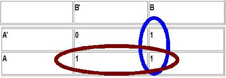
Las “agrupaciones” siempre se hacen en forma de rectángulo. En general, si tenemos una función con n variables :
Un rectángulo que ocupa una celda equivale a un término con n variables.
Un rectángulo que ocupa dos celdas equivale a un término con n-1 variables.
Un rectángulo que ocupa 2n celdas equivale al término de valor 1.
Todos los rectángulos o agrupaciones contendrán un número par de celdas (en realidad con 2n celdas) con la única excepción de cuando es una celda única. Por lo tanto, para encontrar expresión más simplificada se debe:
Minimizar el número de rectángulos que se hacen en el mapa de Karnaugh, para minimizar el número de términos resultantes.
Maximizar el tamaño de cada rectángulo, para minimizar el número de variables de cada término resultante.
Veamos
otro ejemplo: Simplificar la
función de tres variables F=A'B+AB'C+C'
Lo primero que hay
que hacer es representarlo en un mapa de Karnaugh de tres variables.
En el caso de 3 variables la forma genérica sería algo
como:
|
A \ BC |
00 |
01 |
11 |
10 |
|
0 |
m0 |
m1 |
m3 |
m2 |
|
1 |
m4 |
m5 |
m7 |
m6 |
Ok, ponga muchísima atención acá. En las tablas para tres variables, colocamos una variable sóla (ya sea en la columna o en la fila) y las otras dos variables juntas en el otro extremo. Yo lo coloco así por costumbre pero como usted lo ordene no cambiará el resultado. OBSERVE con especial atención la forma en la que varía los números en el mapa. En el caso de la fila que contiene a BC, los bits que contienen NO incrementan en forma normal. En vez de ello el cambio se hace de forma tal que los valores adyacentes reflejen únicamente el cambio de un bit (algo así al estilo del código Gray o reflejado que vimos en capítulos anteriores). Esto DEBE HACERSE ASÍ. De lo contrario el mapa no serviría ya que celdas adyacentes podrían contener cambios de más de una variable lo cual es impermisible. Observen también que debido a esta característica los términos mínimos en las celdas no cambian incrementando naturalmente en decimal. Se ve que en la fila de A' se encuentran m0, m1, m3, y m2 respectivamente y en ese extricto orden. NOTA: Un tip. El término mínimo que debe ir en cada celda se puede calcular fácilmente convirtiendo los bits ABC a decimal. Por ejemplo, en la celda en la que la combinación de los bits para ABC es 011 (cuyo valor decimal es 3), va rellena con m3. Esta propiedad se cumple siempre y lo veremos en los casos con más variables.
Dicho esto continuemos. Aquí no realizaré la tabla de la verdad. En vez de ello colocaré los unos directamente sobre el mapa. Si usted quiere puede hacer la tabla de la verdad o llevar la función a su forma canónica. Yo sencillamente no lo hago para ahorrar tiempo ya que en este punto, esos temas ya deben ser dominados por ustedes. En todo caso el resultado de la función en sus formas canónicas simplificadas es F(A,B,C)=∏(1,7)=∑(0,2,3,4,5,6)
|
A \ BC |
00 |
01 |
11 |
10 |
|
0 |
1 |
0 |
1 |
1 |
|
1 |
1 |
1 |
0 |
1 |
Coloqué
los unos donde correspondía y ahora debemos buscar las
regiones que nos indiquen la función simplificada. Lo primero
que debemos observar es que las regiones pueden agruparse de los
extremos del mapa, como la región azul que vemos a
continuación:
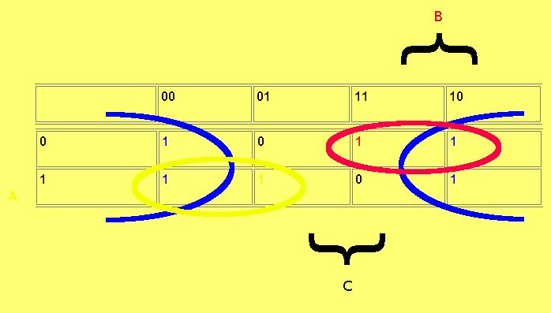
Esta
región representa a C'. ¿Por qué queda C'?
Observe que el rectángulo de 4 celdas son comunes a C=0. (Para
facilitar el entendimiento de este punto, coloque A en amarillo en el
borde izquierdo para cuando A=1 y coloqué unas llaves que
indican cuando B=1 y C=1). Se ve que el rectángulo rodeado por
azul es C' (La llave con C no tiene ningún caso allí) y
se ve que no importan los valores de A ni de B ya que están
complementados (0 ó 1 en ambas variables). Vemos
también que queda un bit en A'BC (que está en rojo) y
uno en AB'C (en amarillo), pero siempre conviene agruparlo lo más
posible, en regiones cuyas celdas sean potencias de 2. En este
caso, los agrupamos con el 1 contiguo, para que la región
quede como A'B (ya que la elipse roja está sobre A' y bajo B
-vea la llave) y AB' (analícelo) respectivamente. Así,
la función resultante sería F=A'B+AB'+C'.
Veamos otro caso. Simplificar la función de cuatro variables F(A,B,C,D)=∑(0,2,3,5,7,8,10,13)
En los casos de 4 variables podemos organizar de la siguiente forma:
|
AB \ CD |
00 |
01 |
11 |
10 |
|
00 |
m0 |
m1 |
m3 |
m2 |
|
01 |
m4 |
m5 |
m7 |
m6 |
|
11 |
m12 |
m13 |
m15 |
m14 |
|
10 |
m8 |
m9 |
m11 |
m10 |
Note nuevamente la variación
en las filas y columnas. Sólo un bit cambia en las
adyacencias. FÍJESE muy bien como
quedaron organizados los términos mínimos. Vea y
deduzca que si combina los bits ABCD y convierte a decimal, verá
que la celda correspondiente contiene el término mínimo
que explicamos anteriormente que debería contener. Por ejemplo
si AB,CD=10,11, (1011)2=11 y en dicha celda está
m11.
Lo primero que hacemos es vaciar la función al mapa. Como ya tenemos la forma canónica, el vaciado es directo. Observe como queda el mapa.
|
AB \ CD |
00 |
01 |
11 |
10 |
|
00 |
1 |
0 |
1 |
1 |
|
01 |
0 |
1 |
1 |
0 |
|
11 |
0 |
1 |
0 |
0 |
|
10 |
1 |
0 |
0 |
1 |
Ahora, lo siguiente es agrupar las variables en regiones. La primera región agrupada son las esquinas (en rojo). Esta agrupación representa B'D' ya que los valores comunes son B=0 y D=0. A y C tienen ambos valores, o sea, están complementados. Como ejercicio muestre este mapa con las llaves indicando donde las variables son 1 tal como mostré el caso anterior. No lo hago yo aquí porque me consume mucho tiempo. Sigamos. La siguiente región la agrupo con los 1's en verde y esta agrupación representa A'CD. Pude hacer el grupo con el 1 a la derecha, pero hubiera significado agrupar un 1 ya agrupado (que, como vimos, a veces es requerido para simplificar aún más la expresión), y dejar otro 1, aún no agrupado, por agrupar. Así que se agrupa de esta forma para obtener menos términos. Los 1's que quedan hasta este momento, en azul, pueden agruparse juntos. Esto representa a BC'D. Por lo tanto la función queda: F=B'D'+A'CD+BC'D.
Es importante notar que se puede agrupar otra region con un 1 verde y uno azul y representaría A'BD. Esta región es una simplificación adicional válida, que pudo haberse manejado e incluso agregado a la función. En ocasiones, habrá varias formas de agrupar a los 1's. Todas son válidas, y representan soluciones equivalentes. Sin embargo, hay que cuidar de siempre agrupar las regiones lo más grandes posibles, y cuidando de agrupar a los 1's de manera que se repitan lo menos posible. Como esos “unos” ya fueron agrupados no requieren volver a serlo.
Entonces los pasos a seguir para simplificar una función son:
1. Convertir la expresión a una suma de productos si es necesario. Ésto se puede realizar de varias maneras:
Llevándola algebraicamente a su forma canónica.
Construyendo una tabla de verdad, trasladando los valores al mapa de Karnaugh.
2. Cubrir todos los unos del mapa mediante rectángulos de 2n elementos. Ninguno de esos rectángulos debe contener ningún cero.
Para minimizar el número de términos resultantes se hará el mínimo número posible de rectángulos que cubran todos los unos.
Para minimizar el número de variables se hará cada rectángulo tan grande como sea posible. Ejemplo:
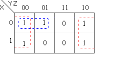
Véase que en este caso se ha unido la columna izquierda con la derecha para formar un único rectángulo y que el “uno” en 001 se ha emparejado con el “uno” de al lado con la idea de reducir ese término en un literal.
3. Encontrar la suma de productos mínima. Ojo, como ya se dijo, podemos encontrarnos con que puede haber más de una suma de productos e incluso casos en que tengamos dos reducciones con el mismo número de términos y literales siendo ambas válidas.
Cada rectángulo pertenece a un término producto.
Cada término se define encontrando las variables que hay en común en tal rectángulo.
En nuestro ejemplo tenemos F(X, Y, Z) = Z’ + X’Y’ . Nótese que las variables resultado son las que tienen un valor común en cada rectángulo.
Cada rectángulo representa un término. El tamaño del rectángulo y el del término resultante son inversamente proporcionales, es decir que, cuanto más largo sea el rectángulo menor será el tamaño del término final.
Cuando tenemos distintas posibilidades de agrupar rectángulos hay que seguir ciertos criterios:
Localiza todos los rectángulos más grandes posibles, agrupando todos los unos. Estos se llamarán implicantes primos.
Si alguno de los rectángulos anteriores contiene algún uno que no aparece en ningún otro rectángulo entonces es un implicante primo esencial. Éstos han de aparecer en el resultado final de manera obligatoria.
El resto de los implicantes primos se podrán combinar para obtener distintas soluciones.
Véase este ejemplo que ilustra lo dicho. Aquí los implicantes primos son cada uno de los diferentes rectángulos obtenidos. Los implicantes primos esenciales son el rectángulo rojo y el verde, por contener “unos” que no son cubiertos por otros rectángulos. Así todas las posibles soluciones han de contener estos dos implicantes.
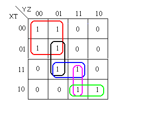
La mejor solución, por ser la que usa menos términos y menos literales es: F( X, Y, Z, T ) = X’Y’ + XYT’ + XZT
Ejemplo. Para la función:
F=A'B'C'D'+A'BC'D'+ABC'D'+AB'C'D'+A'BC'D+ABC'D+AB'C'D+ABCD+AB'CD+A'B'CD'+A'BCD'+ABCD'+AB'CD'
el mapa es:
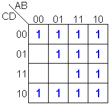
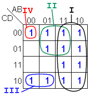
término I : agrupa 8 unos y es de una variable. Ésta es A. Este término es un implicante primo esencial.
término II : agrupa 4 unos y es de dos variables. Éstas son BC con C negado. Es un implicante primo esencial.
término III : agrupa 2 unos y es de tres variables. Éstas son ACD con A y D negados. NO es un implicante primo.
término IV : agrupa sólo un 1 y es de cuatro variables que son ABCD todos negados. Éste, NO es un implicante primo.
Esa forma de organizar el mapa NO contiene ningún implicante primo que NO sea esencial.
Puede verse que a medida que agrupamos mayor cantidad de "unos", el término tiene menos literales. El agrupamiento se hace con una cantidad de "unos" que son potencias de 2. Así agrupamos 2 minterm's, 4 minterm's y 8 minterm's. Cada vez que aumentamos el rectángulo, el término va eliminando una variable. En una función de 4 variables, un término que tenga un sólo "uno" tendrá las cuatro variables. De hecho es un término canónico. Al agrupar dos minterm's eliminaremos una variable y el término quedará de tres variables. Si agrupamos cuatro "unos" eliminaremos dos variable quedando un término de dos variables y finalmente si agrupamos ocho "unos" se eliminaran tres variable para quedar un término de una única variable. Todo esto se debe a la adyacencia entre casillas y cada vez que agrupamos, se eliminan las variables que se complementan.
En este ejemplo obtenemos F=A'B'C'D'+A'CD'+BC'+A
Pero en realidad, ésta no es la función mínima... ¿cierto? El mismo mapa podemos agruparlo de otra forma y obtener:
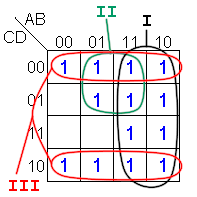
Vamos de nuevo. Recuerden que para simplificar funciones utilizando mapas de Karnaugh hay que tener en cuenta que:
Podemos concluir que cada casilla (minterm) en un mapa de Karnaugh de n variable tiene n casillas adyacentes lógicamente, o sea, que se diferencian en las adyacencias por una sola variable (se complementan). Esta información es de gran utilidad en los casos de 5 y 6 variables.
Al combinar las casillas en un mapa de Karnaugh, agruparemos un número de minterm's que sea potencia de dos. Así, al agrupar dos casillas eliminamos una variable, al agrupar cuatro casillas eliminamos dos variables, y así sucesivamente. De hecho podemos concluir que al agrupar 2n casillas, eliminamos n variables.
Debemos agrupar tantas casillas como sea posible; cuanto mayor sea el grupo, el término producto resultante tendrá menos literales. Es importante incluir todos los "unos" adyacentes a un minterm que sea igual a uno.
Para que hayan menos términos en la función simplificada, debemos formar el menor numero de grupos posibles que cubran todas las casillas (minterm's) que sean iguales a uno. Un "uno" puede ser utilizado por varios grupos, no importa si los grupos se solapan. Lo importante es que si un grupo está incluido completamente en otro grupo, o sus "unos" están cubiertos por otros grupos, no hace falta incluirlo como término.
Veamos otro caso en el que repasamos lo que significa “términos implicantes”. En el siguiente mapa de Karnaugh:
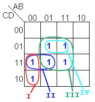
Los términos I, II y III son implicantes primos.
El término IV no es implicante primo.
Los términos I y III son implicantes primos esenciales.
El término II no es un implicante primo esenciales.
La función se obtiene con los términos I y III
Mapas de Karnaugh con 5 y 6 variables
Los ejemplos anteriores se realizaron con funciones de hasta 4 variables. Para mapas de Karnaugh de 5 y 6 variables el procedimiento es esencialmente el mismo y sólo hay que recordar que un término mínimo tiene adyacente a otro minterm, tanto en forma horizontal o vertical, qué muestra diferencia en una sola variable.
Veamos a continuación el caso de 5 variables. Aquí hay 25 = 32 posibilidades. Una de las formas de ver el mapa es:
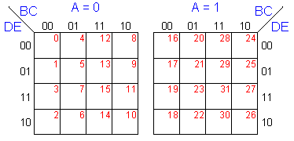
Supongamos el siguiente caso: Simplificar la función
F=∑ (0,2,8,11,15,18,20,21,27,28,29,31)
Colocando un uno en los términos mínimos correspondientes, tenemos que:
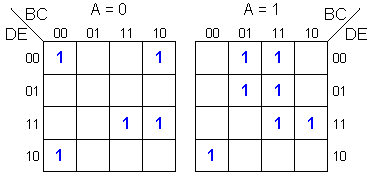
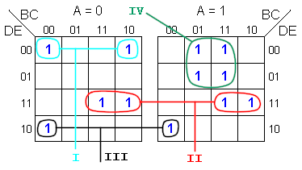
F=A'C'D'E'+BDE+B'C'DE'+ACD'
que son los grupos I, II, III y IV respectivamente.
Por último, para el caso de 6 variables tenemos 64 combinaciones posibles y la forma para expresar el mapa que nosotros usaremos será:
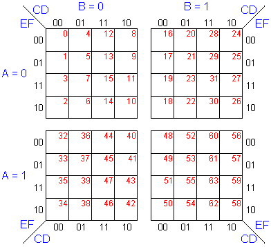
Como ejercicio, resuelva el siguiente mapa:
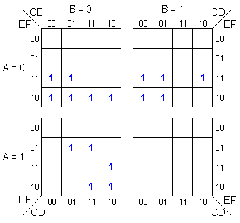
Para practicar les voy a dar un programa “freeware” muy intuitivo y fácil de usar, aunque limitado a 4 variables. Llenan la tabla de la verdad y a medida que van colocando los unos, se va llenando el mapa de Karnaugh, a la vez que se van agrupando los términos y mostrando el resultado abajo. A/B/CD representa AB'C'D. Usan /X para simular la raya sobre la letra que representa el símbolo de negado (al igual que el tilde). También se pueden marcar los unos directamente en el mapa de Karnaugh. Es un archivo pequeño y no se requiere instalación. Hagan click aquí para bajarlo.
#######################################################
NOTA AGREGADA: He conseguido otro programa bastante bueno y gratuito. El programa fue creado por Javier García Zubía y su página web está en http://paginaspersonales.deusto.es/zubia/. Allí encontrarán varios links. El programa en cuestión está en BOOLE-DEUSTO: Descarga gratuita (español) . También allí encuentran un manual en BOOLE-DEUSTO: Manual (español). El programa que me interesó más está dentro del archivo comprimido BOOLE_SP con nombre boole.exe.
Si no quieren leer el manual (cosa que deberían), luego de usarlo un rato se entiende como funciona. No es para nada tan fácil de usar como el otro programa que les di, pero si muchísimo más completo con muchas más opciones. Muy Interesante. He hecho ejemplos de hasta 12 variables. También tiene varios métodos para la entrada de los datos. Pruébenlo.
#######################################################
Hagan el siguiente ejercicio a mano y luego, con la tabla de la verdad o la forma canónica que consiguieron, prueben el programa.
F(x, y, z,w) = x’y’z’w + x’y’z + x’yz’w' + xy’z’ + xyz’
Si lo desea, puede ver otros puntos de vista de este tema en:
Para la próxima clase veremos el tema 5: Condiciones irrelevantes (don't care). Universalidad de las compuertas NAND y NOR.